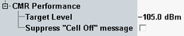

The settings in the section of the "GSM CMR Performance" dialog configure the target level.

The target level replaces the configured TX level (see "Circuit Switched > PCL") when the CMR performance test is started. The target power level makes the MS to request another codec mode, assuming that the related up/down codec mode thresholds are exceeded.
After the CMR performance measurement has finished, the target level value is overtaken by the parameter DL reference level, see "DL Reference Level"
Remote command:If you press ON | OFF while the "GSM Signaling" softkey is selected and the cell signal is on, a warning can be displayed. It asks you whether you really want to switch off the cell signal.
The checkbox enables/disables the warning.
No remote control is provided for this feature.